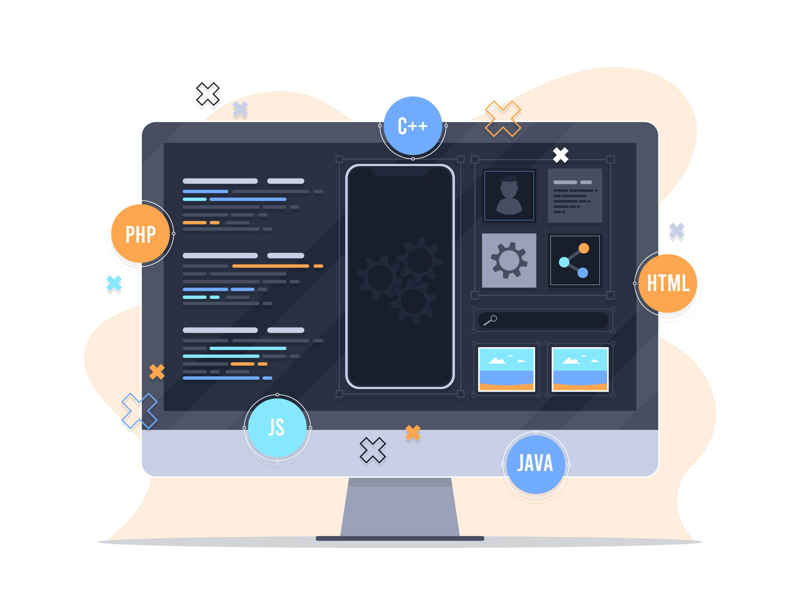

Frontend Developer

Front-End Developer bertanggung jawab menciptakan antarmuka pengguna
yang menarik dan interaktif pada situs web, menggunakan teknologi
seperti HTML, CSS, dan JavaScript untuk memastikan pengalaman
pengguna yang optimal dan responsif.
Lihat Selengkapnya!
Backend Developer

Backend Developer bertanggung jawab untuk logika server, basis data,
dan integrasi aplikasi, memastikan fungsionalitas situs web berjalan
mulus di sisi server dan mendukung performa aplikasi yang optimal.
Lihat Selengkapnya!
Fullstack Developer

Full Stack Developer menguasai front-end dan back-end, bekerja
dengan klien, server, dan basis data untuk membangun aplikasi web
lengkap, memastikan integrasi dan fungsionalitas dari seluruh
sistem.
Lihat Selengkapnya!